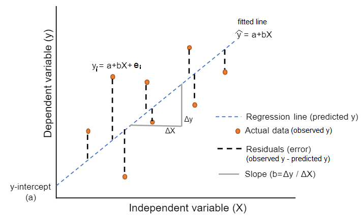

5 Linear regression (1)
When we have finished this chapter, we should be able to:
5.1 Introduction to simple linear regression
Simple linear regression involves a numeric dependent (or response) variable \(Y\) and one independent (or explanatory) variable \(X\) that is either numeric or categorical.
Often it is of interest to quantify the linear association between two numeric variables, \(X\) and \(Y\), and given the value of one variable for an individual, to predict the value of the other variable. This is not possible from the correlation coefficient as it simply indicates the strength of the association as a single number; in order to describe the association between the values of the two variables, a technique called regression is used. In regression, we assume that a change in the independent variable, \(X\), will lead directly to a change in the dependent variable \(Y\). However, the term “dependent” does not necessarily imply a cause-and-effect relationship between the two variables.
We may recall from secondary/high school algebra that the equation of a line is: \[y = \beta_o + \beta_1 \cdot x \tag{5.1}\]
The Equation 5.1 is defined by two coefficients (parameters) \(\beta_o\) and \(\beta_1\).
The intercept coefficient \(\beta_o\) is the value of \(y\) when \(x = 0\) (the point where the fitted line crosses the y-axis; Figure 5.1).
The slope coefficient \(\beta_1\) for \(x\) is the mean change in \(y\) for every one unit increase in \(x\) (Figure 5.1).
5.1.1 Importing data
Open the dataset named “BirthWeight” from the file tab in the menu (Figure 5.3).
Data of 550 infants at 1 month age was collected. The following variables were recorded:
• Body weight of the infant in g (weight)
• Body height of the infant in cm (height)
• Head circumference in cm (headc)
• Gender of the infant (gender: Female, Male)
• Birth order in their family (parity: Singleton, One sibling, 2 or more siblings)
• Education of the mother (education: tertiary, year10, year12)
5.2 Research question
Let’s say that we want to model the association between height and weight for the sample of 550 infants of 1 month age. In other words, we want to find the parameters of a mathematical equation, such as \(y = \beta_o + \beta_1 \cdot x\).
5.3 Hypothesis Testsing
5.4 Scatter plot
We start our analysis by creating the scatter plot of the response variable weight and the explanatory variable height. The pattern of the plotted points typically reveals the nature and strength of the association between the two variables.
On the Jamovi top menu navigate to
flowchart LR A(Analyses) -.-> B(Exploration) -.-> C(Scatterplot)
as shown below in Figure 5.4.
In the ANOVA dialog box, highlight height in the left panel and drug it to the the X-axis. Then highlight the weight drug it to the Y-axis (Figure 5.5). Additionally, check from the Regression Line “Linear”.

As we can see in Figure 5.6, the points seem to be scattered around a line. The scatter plot also shows that, in general, infants with high height tend to have high weight (positive association).
To select the best fitting straight line of the data set, it is necessary to determine the estimated values \(b_o\) and \(b_1\) of parameters \(\beta_o\) and \(\beta_1\) in Equation 5.1. The regression equation of the model becomes:
\[\widehat{y} = b_o + b_1 \cdot x \tag{5.2}\]
Why do we put a “hat” on top of the \(y\)? It’s a form of notation commonly used in regression to indicate that we have a predicted value, or the value of \(y\) on the regression line for a given \(x\) value.
5.4.1 Linear regression
The process of fitting a linear regression model to the data involves finding a straight line that can be considered as the best representation of the overall association between age and lung capacity.
To choose a line, we need to explain what we mean by the “best representation” of the data. A “best-fitting” line refers to the line that minimizes the sum of squared residuals (RSS). Therefore, we refer to the resulting model as the least-squares linear regression model and to the corresponding line as the least-squares regression line.
5.4.2 Fit a simple linear regression model
On the Jamovi top menu navigate to
flowchart LR A(Analyses) -.-> B(Regression) -.-> C(Linear Regression)
as shown below (Figure 6.4).
The Linear Regression dialogue box opens (Figure 5.8). From the left-hand pane drag the variable weight into the Dependent Variable field and the variable height into the Covariates field on the right-hand side, as shown below:
Next, from the Assumption Checks section tick the box “Q-Q plot of residuals” (Figure 5.9).
The Figure 5.9 shows no significant deviation from normality.
Additionally, from the Model Coefficients section tick the box “Confidence interval” in Estimate (Figure 6.16):
The output table with the model coefficients should look like the following (Figure 5.12):
Now, let’s focus on interpreting the regression table in Figure 5.12. In the estimate column are the intercept \(b_o\) = -5411.95 \(\approx 5412\) and the slope \(b_1\) = 178.3 \(\approx 178\) for height. Thus the equation of the regression line becomes:
\[ \begin{aligned} \widehat{y} &= b_o + b_1 \cdot x\\ \widehat{\text{weight}} &= b_o + b_1 \cdot\text{height}\\ \widehat{\text{weight}}&= -5412 + 178\cdot\text{height} \end{aligned} \]
The intercept \(b_o\)
The intercept \(b_o =5412\) is the average weight for those infants with height of 0. In graphical terms, it’s where the line intersects the \(y\) axis when \(x\) = 0 (Figure 5.13). Note, however, that while the intercept of the regression line has a mathematical interpretation, it has no physical interpretation here, since observing a weight of 0 is impossible.
The slope \(b_1\)
Of greater interest is the slope of height, \(b_1 = 178\), as it summarizes the association between the height and weight variables.
The graphical calculation of the slope from two points of the fitted line is (Figure 5.14):
\[ b =\frac{dy}{dx}=\frac{5270-4560}{60-56}= \frac{710}{4} \approx 178 \] Note that, in this example, the coefficient has units g/cm.
Additionally, note that the sign is positive, suggesting a positive association between these two variables, meaning infants with higher height also tend to have higher weight. Recall from earlier that the correlation coefficient was \(r = 0.71\). They both have the same positive sign, but have a different value. Recall further that the correlation’s interpretation is the “strength of linear association”. The slope’s interpretation is a little different:
For every 1 cm increase in height, there is on average an associated increase of 178 g of weight.
We only state that there is an associated increase and not necessarily a causal increase. In other words, just because two variables are strongly associated, it doesn’t necessarily mean that one causes the other. This is summed up in the often quoted phrase, “correlation is not necessarily causation.”
Furthermore, we say that this associated increase is on average 178 g of weight, because we might have two infants whose height differ by 1 cm, but their difference in weight won’t necessarily be exactly 178. What the slope of 178 is saying is that across all possible infants, the average difference in weight between two infants whose height differ by 1 cm is 178 g.
5.5 The Standard error (SE) of the regression slope
The third column of the regression table in Figure 5.12 corresponds to the standard error of our estimates. We are interested in understanding the standard error of the slope (\(SE_{b}\)).
Say we hypothetically collected 1000 samples of pairs of weight and height, computed the 1000 resulting values of the fitted slope \(b\), and visualized them in a histogram. This would be a visualization of the sampling distribution of \(b\). The standard deviation of the sampling distribution of \(b\) has a special name: the standard error of \(b\).
The coefficient for the independent variable ‘height’ is 178.31. The standard error is 7.49, which is a measure of the variability around this estimate for the regression slope.
5.6 Test statistic and confidence intervals for the slope
The 6th column of the regression table in Figure 5.12 corresponds to a t-statistic. The hypothesis testing for the slope is:
\[ \begin{aligned} H_0 &: \beta_1 = 0\\ \text{vs } H_1&: \beta_1 \neq 0. \end{aligned} \]
The null hypothesis, \(H_{0}\), states that the coefficient of the independent variable (height) is equal to zero, and the alternative hypothesis, \(H_{1}\), states that the coefficient of the independent variable is not equal to zero.
The t-statistic for the slope is defined by the following equation:
\[\ t = \frac{\ b_1}{\text{SE}_{b_1}} \tag{5.3}\]
In our example:
\[\ t = \frac{\ b_1}{\text{SE}_{b_1}}=\frac{\ 178.31}{\text{7.49}} = 23.81\]
In practice, we use the p-value (as generated by Jamovi based on the value of the t-statistic Equation 5.3) to guide our decision:
- If p − value < 0.05, reject the null hypothesis, \(H_{0}\).
- If p − value ≥ 0.05, do not reject the null hypothesis, \(H_{0}\).
In our example p <0.001 \(\Rightarrow\) reject \(H_{0}\).
The \(95\%\) CI of the coefficient \(b\) for a significance level α = 0.05, \(df=n-2\) degrees of freedom and for a two-tailed t-test is given by:
\[ 95\% \ \text{CI}_{b} = b \pm t_{df; 0.05/2} \cdot \text{SE}_{b_1} \tag{5.4}\]
In our example:
\[ 95\% \ \text{CI}_{b_1} = 178.31 \pm 1.96 \cdot \text{7.49}= 178.31 \pm 14.68 \Rightarrow 95\% \text{CI}_{b_1}= \ (163.6, 193)\]
5.7 Observed, predicted (fitted) values and residuals
We define the following three concepts:
- Observed values \(y\), or the observed value of the dependent variable for a given \(x\) value
- Predicted (or fitted) values \(\widehat{y}\), or the value on the regression line for a given \(x\) value
- Residuals \(y - \widehat{y}\), or the error (ε) between the observed value and the predicted value for a given \(x\) value

The residuals are exactly the vertical distance between the observed data point and the associated point on the regression line (predicted value) (Figure 5.15). Positive residuals have associated y values above the fitted line and negative residuals have values below. We want the residuals to be small in magnitude, because large negative residuals are as bad as large positive residuals.
Figure 5.16 shows these values:
| ID | weight | height | weight_hat | residual |
|---|---|---|---|---|
| 1 | 3950 | 55.5 | 4483.486 | -533.486 |
| 2 | 4630 | 57.0 | 4750.930 | -120.930 |
| 3 | 4750 | 56.0 | 4572.634 | 177.366 |
| 4 | 3920 | 56.0 | 4572.634 | -652.634 |
| 5 | 4559 | 55.0 | 4394.338 | 164.662 |
| 6 | 3639 | 51.5 | 3770.301 | -131.301 |
| 7 | 3550 | 56.0 | 4572.634 | -1022.634 |
| 8 | 4530 | 57.0 | 4750.930 | -220.930 |
| 9 | 4969 | 58.5 | 5018.375 | -49.375 |
| 10 | 3740 | 52.0 | 3859.449 | -119.449 |
Observe in the above table that weight_hat contains the predicted (fitted) values \(\widehat{y}\) = \(\widehat{\text{weight}}\).
The residual column is simply \(e_i = y - \widehat{y} = weight - weight\_hat\).
Let’s see, for example, the values for the first infant and have a visual representation:
The observed value \(y\) = 3950 is infant’s weight for \(x\) = 55.5.
The predicted value \(\widehat{y}\) is the value 4483.939 on the regression line for \(x\) = 55.5. This value is computed using the intercept and slope in the previous regression in Figure 5.16: \[\widehat{y} = b_o + b_1 \cdot x = -5411.953 + 178.296 \cdot 55.5 = 4483.48\]
The residual is computed by subtracting the predicted (fitted) value \(\widehat{y}\) from the observed value \(y\). The residual can be thought of as a model’s error or “lack of fit” for a particular observation. In the case of this infant, it is \(y - \widehat{y}\) = 3950 - 4483.4 = -533.4 .
A “best-fitting” line refers to the line that minimizes the sum of squared residuals (RSS), also known as sum of squared estimate of errors (SSE) out of all possible lines we can draw through the points. The method of least squares is the most popular method used to calculate the coefficients of the regression line.
\[ min(RSS) =min\sum_{i=1}^{n}(y_i - \widehat{y}_i)^2 \tag{5.5}\]
In Figure 5.17, we have found the minimum value of RSS (it turns out to be 97723317) and have drawn a horizontal dashed green line. At the point where this minimum touches the graph, we have read down to the x axis to find the best value of the slope. This is the value 178.
5.8 Quality of a linear regression fit
The quality of a linear regression fit is typically assessed using two related quantities: residual standard error (RSE) and the coefficient of determination R\(^2\).
Residual standard error (RSE)
RSE represents the average distance that the observed values fall from the regression line. Conveniently, it tells us how wrong the regression model is on average using the units of the response variable. Smaller values are better because it indicates that the observations are closer to the fitted line. In our example:
\[\ RSE = \sqrt{\frac{\ RSS}{n-2}}= \sqrt{\frac{\ 97723317}{550-2}}= 422.3 \tag{5.6}\]
Coefficient of determination R\(^2\)
The quality of our simple linear model is presented in Figure 5.18:

The R\(^2\) is the fraction of the total variation in \(y\) that is explained by the regression.
\[\ R^2 = \frac{\ explained \ \ variation}{total \ \ variation} \tag{5.7}\]
The R\(^2\) value is called the coefficient of determination and indicates the percentage of the variance in the dependent variable that can be explained or accounted for by the independent variable. Hence, it is a measure of the ‘goodness of fit’ of the regression line to the data. It ranges between 0 and 1 (it won’t be negative). An R\(^2\) statistic that is close to 1 indicates that a large proportion of the variability in the response has been explained by the regression. A number near 0 indicates that the regression did not explain much of the variability in the response.
In our example takes the value 0.509. It indicates that about 50.9% of the variation in infant’s body weight can be explained by the variation of the infant’s body height. In simple linear regression \(\sqrt{0.509} = 0.713\) which equals to the Pearson’s correlation coefficient, r.
5.9 Simple linear regression with a binary explanatory variable
Using the same sample of 550 infants of 1 month age we want to examine how body weight is associated with the gender of the infant. Now we have an explanatory variable x that is binary (Male/Female), as opposed to the numerical explanatory variable model (height) that we used previously.
In the Linear Regression dialogue box opens (Figure 5.19) drag the variable gender into the Factors field.
A graphical comparison of the weight between the males and females is presented below using the JJStatsPlot:
How can we handle this variable in a mathematical equation? Well, we will use a trick. All cases in which the respondent is Male will be coded as 1 and all other cases, in which the respondent is Female, will be coded as 0 (reference category). This allows us to enter in the gender values as numerical (note that these numbers are just indicators).
\[ \text{gender} = \begin{cases} 1 & \text{if infant is Male} \\ 0 & \text{otherwise (ref.)} \end{cases} \]
The equation of the regression line will have the following form:
\[ \begin{aligned} \widehat{y} &= b_o + b_1 \cdot x\\ \widehat{\text{weight}} &= b_o + b_1 \cdot\text{gender} \end{aligned} \]
Additionally, from the Model Coefficients section tick the box “Confidence interval” in Estimate (Figure 6.16):
The output table with the model coefficients should look like the following (Figure 5.21):
The equation of the model becomes:
\[ \begin{aligned} \widehat{\text{weight}} &= b_o + b_1 \cdot\text{gender}\\ \widehat{\text{weight}} &= 4140 + 452 \cdot\text{gender} \end{aligned} \]
The “intercept” represents the average weight of a female infant, which is 4140 g and serves as the reference category.
The “gender” term denotes the average weight difference between male and female infants, which is 452 g.
Therefore, the mean weight of a male infant is (4140 + 452) 4592 g which is significantly higher (on average) about 452 g relative to a female infant (p<0.001). The 95% confidence interval for this estimation (the difference in means) is 358 to 545 g.
It is important to note that the above analysis is equivalent to run a two-sample t-test.
5.10 Simple linear regression with a categorical explanatory variable (> 2 categories)
Suppose that infants are categorized into three categories based on parity: singletons, having one sibling, or having 2 or more siblings. We choose as the reference category the singleton infants.
In the Linear Regression dialogue box opens (Figure 5.19) drag the variable gender into the Factors field.
A graphical comparison of the weight between the males and females is presented below using the JJStatsPlot:
We will use the previous trick and we will create 2 dummy variables to assign numerical values to the levels of parity. So each dummy variable will represent one category of the explanatory variable and will be coded with 1 if the case falls in that category and with 0 if not.
\[ \text{parity1} = \begin{cases} 1 & \text{if infant has one sibling} \\ 0 & \text{otherwise (ref.)} \end{cases} \]
\[ \text{parity2} = \begin{cases} 1 & \text{if infant has 2 or more siblings} \\ 0 & \text{otherwise (ref.)} \end{cases} \]
The equation of the regression line will have the following form:
\[ \begin{aligned} \widehat{y} &= b_o + b_1 \cdot x\\ \widehat{\text{weight}} &= b_o + b_1 \cdot\text{parity1} + b_2 \cdot\text{parity2} \end{aligned} \]
Therefore, we are including all the categories to the linear regression model except the one which is going to be used as the reference category (here is the Singleton). Actually, we create a multiple regression model which we will examine later analytically.
We also select from the Reference Level the “Singleton” category and from the Model Coefficients section tick the box “Confidence interval” in Estimate (Figure 5.24):
The output table with the model coefficients should look like the following (Figure 5.25):

The equation of the model becomes:
\[ \begin{aligned} \widehat{\text{weight}} &= b_o + b_1 \cdot\text{parity1} + b_2 \cdot\text{parity2}\\ \widehat{\text{weight}} &= 4259 + 130 \cdot\text{parity1} + 192 \cdot\text{parity2} \end{aligned} \]
The intercept corresponds to the mean weight 4259 g for a singleton infant which is the reference category.
The mean weight of an infant with one sibling is 4389 g which is significantly higher (on average) about 130 g relative to a singleton infant (p=0.037). The 95% confidence interval for this estimation (the difference in means) is 8 to 252 g.
The mean weight of an infant with 2 or more siblings is 4451 g which is significantly higher (on average) about 192 g relative to a singleton infant (p=0.002). The 95% confidence interval for this estimation (the difference in means) is 68 to 316 g.